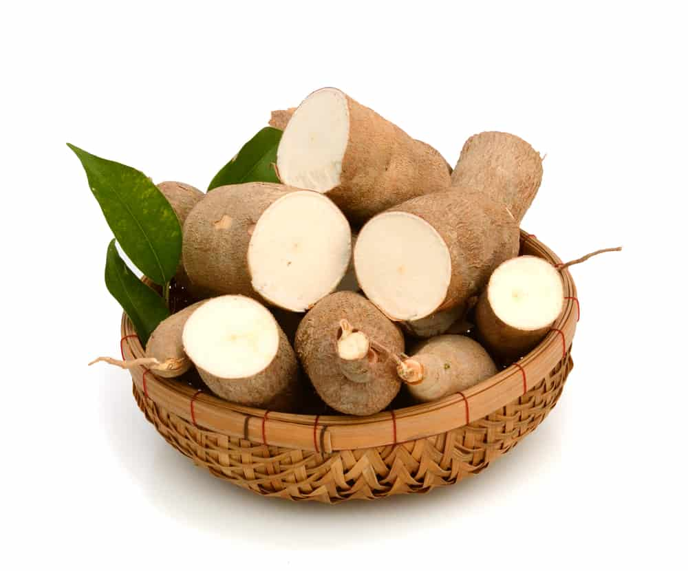

Profil Sampeuan
Sampeuan merupakan sebuah usaha yang menyediakan berbagai macam olahan makanan yang terbuat dari singkong. Kata “sampeu” berasal dari bahasa sunda yang berarti singkong.
Sampeuan adalah tempat di mana kelezatan bertemu dengan keberagaman olahan singkong. Dari camilan ringan hingga hidangan utama yang memuaskan, kami menyajikan ragam sajian yang menggugah selera, semuanya terbuat dengan cinta dari bahan dasar singkong yang kaya akan gizi.
Kami mengambil kebanggaan dalam memilih bahan-bahan berkualitas terbaik, yang diproses dengan teliti dan dipadukan dengan resep tradisional yang telah teruji. Setiap hidangan adalah perpaduan cita rasa yang unik, menggugah lidah dan menyenangkan hati.
Namun, kami di Sampeuan tidak hanya tentang menyajikan makanan lezat. Kami juga berkomitmen untuk mendukung petani lokal dan praktik pertanian berkelanjutan, serta memberikan pengalaman pelanggan yang tak terlupakan dengan layanan ramah dan atmosfer yang hangat.